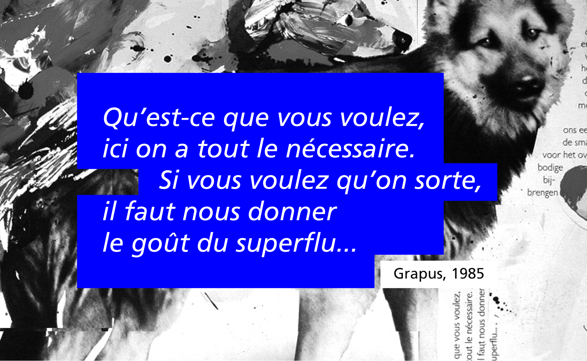
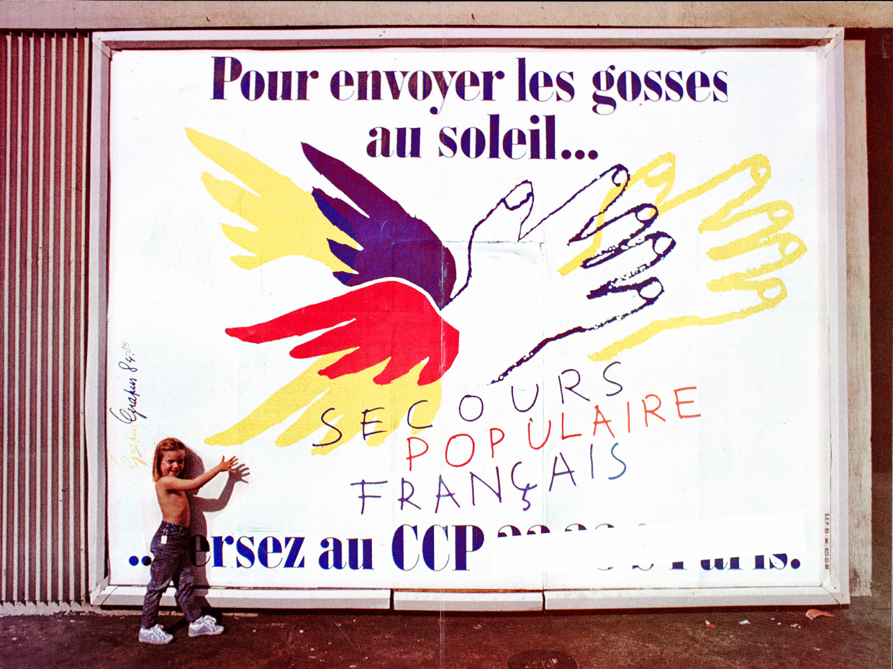
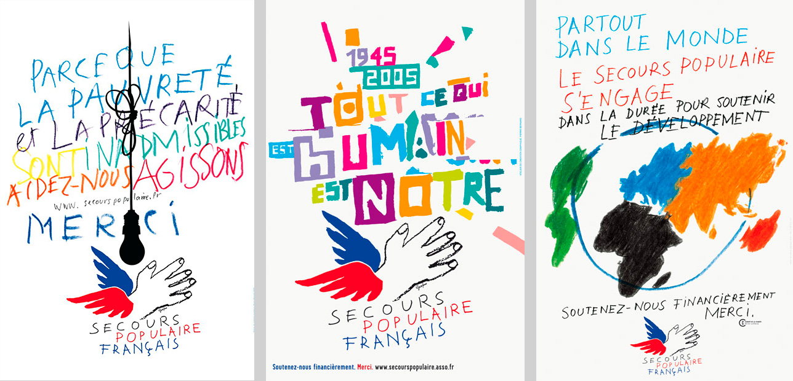
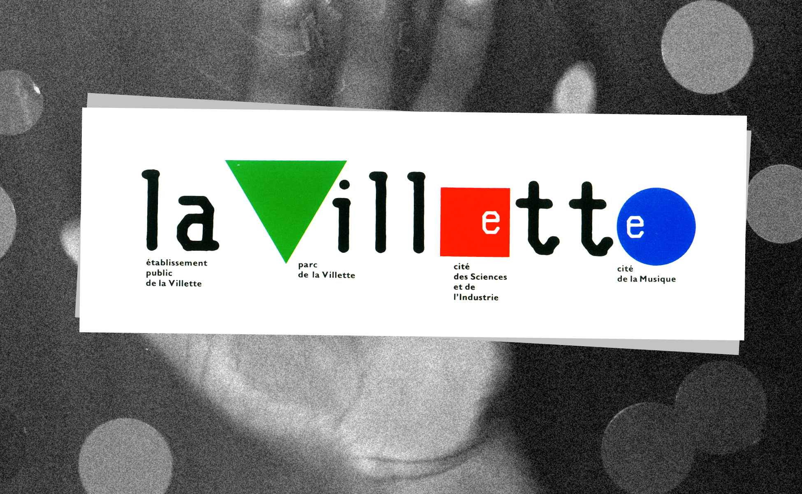
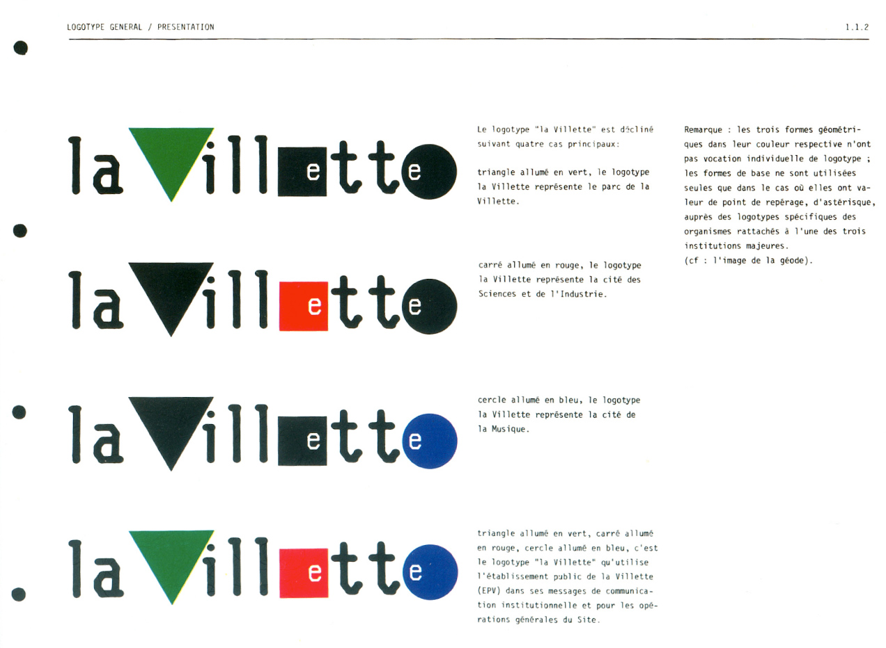
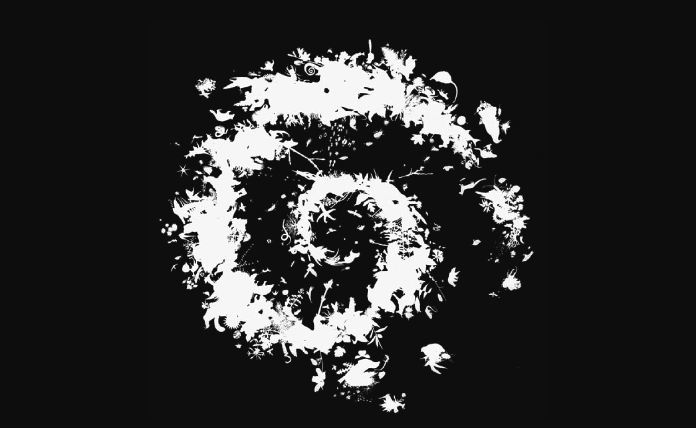
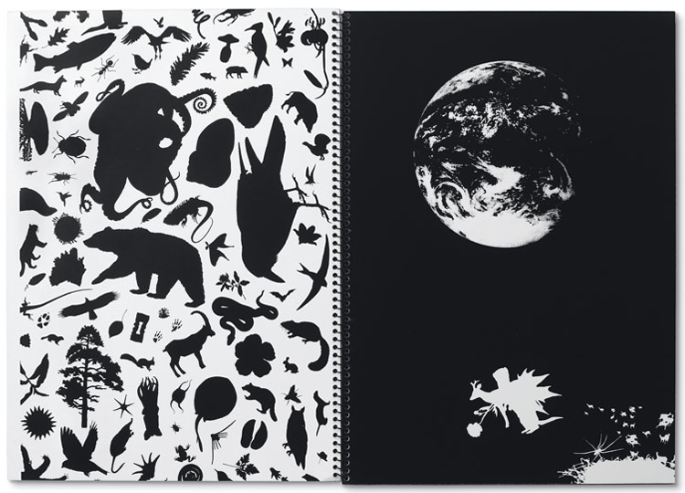
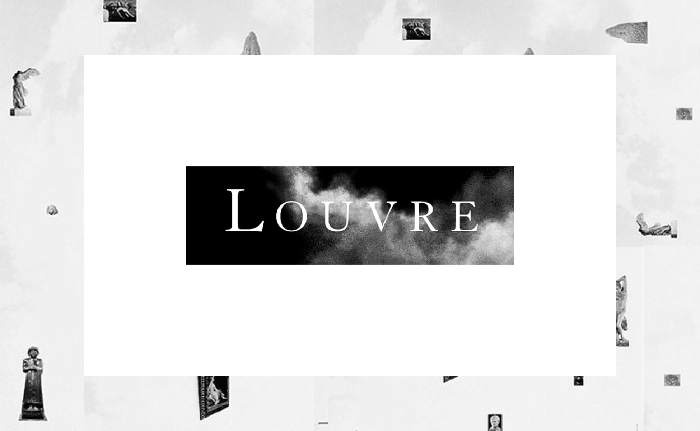

1980 – 1990
Ultimate attempt
On the blog 2avrile, Pierre Bernard tells us about the creation of this poster. Here is an excerpt: "It is a poster that dates from 1985, created from the photo of two dogs procreating, taken on the occasion of a report for the book Zup de famille. It was to imagine a poster for Grapus, on the occasion of an exhibition [...]. It started with discussions and it is somewhere a very emblematic, very voluntarist and very clownish figure of the engrossment of culture (laughs). The title of the poster was Ultimate Attempt. It was a bit of a desperate view of the situation. There was also a reflection on the daily necessity of luxury. That is to say that we thought that the social necessity of graphic design was to make life shine, to be related to happiness through signs. At best, it's not his role all the time. Finally, there was a side revenge on the sponsor and the public asleep or the public who refuses any effort, with this clown who goes to a lot of trouble. Concerning the technique, it corresponded to a moment when one loved to make the pictorial "tattoo". We often worked on transparent films to combine drawing and photography."

Happy communists...
We see it, in the irregular trajectory of Grapus, there is a collective and communist adventure. Everyone wins the same thing (actually, very little... given the economic model) with the complexity of materializing this ideal when it comes to creation, authors and therefore egos. Pierre Bernard summarizes the situation well in the interview he gave to Formes Vives in 2006:
"We got together because we also had the idea that making political images meant thinking them through to the end together: talking about them together, criticizing them together, etc. and therefore doing them together. Doing so is one of today's problems*: it was discussed together, conceived together, criticized together but, concretely, done by different people." *In 2006, following the award of the Erasmus Prize and the publication of a poster catalogue, a heated controversy broke out between Pierre Bernard and his former colleagues at Grapus. The dispute relates in particular to the attribution of the copyrights of the images.
1981 – Secours populaire français
This work of graphic accompaniment of the Secours Populaire began in 1981, in Grapus, with the creation of the winged hand which became a logotype. In 1990, the workshop "Nous Travaillons Ensemble" continued the work and, from 2000, Pierre Bernard took over the torch within the Atelier de création graphique.
Personally, I don't need to dig deep into my visual memory to find that logo. However, since it was one of the first logos I really looked at, this memory probably goes back to my adolescence. But he hasn't aged. His strength, his message is as clear as ever. It's the promise of humanity and solidarity summarized in three lines, the heritage of Cocteau and Picasso together, a slap in my little face as a future graphic designer. Thank you Grapus.

According to Pierre Bernard two objectives are essential to accompany the association. The first is to ensure the graphic coherence of its national identity, despite the large number and diversity of stakeholders and actions carried out. The second is to privilege the expression, the lively speech, the generous aesthetics as well as the richness of the forms to say the vitality of the solidarity action and its invigorating effects.

1985 - La Villette
The logo created from three geometric symbols directly evokes the functionalism of the Bauhaus. It is also a work created in echo to the architecture of Bernard Tschumi and Adrien Fainsilber. The logo with the three "active" colours presents the city as a whole, and with the association of a black, more than one colour, one place in particular: the Cité de la Musique was symbolised by a blue circle, the Cité des Sciences et de l'Industrie by a red square and the Parc de La Villette by a green triangle. The great success of the project is therefore due to the flexibility of an ever-changing sign, both unique and multiple.
With La Villette, Grapus had made a rather surprising contract. In fact, at that time, no customer really knew what to do with a logo once the stationery was delivered. In order to ensure after-creation service, they had the idea of signing an "annual" contract with La Villette, which in return could question them on any subject for a fixed amount.

1990 – National Parks

In response to the original order - seven logos for seven parks - Pierre Bernard, then straddling Grapus and the Atelier de Création Graphique, had proposed an identity where the institutional representation, the signage, the design of the printed matter, the cards, or that of the objects formed a whole. One and the same emblem has been imagined and designed, a symbol common to all territories. Thus, each park in its singularity testifies to the concept of unity and the inexhaustible wealth that its label announces.

1989 - Louvre Museum

In 1989, the I.M. pyramid Pei symbolizes and majestically consecrates the reopening of the entrance of the Louvre Museum almost entirely transformed. In connection with the architectural project management, the internal signage of the spaces was entrusted to an American office, Carbone Smolan Associates, which made the decisive choice of the Granjon character as the main accompanying typography. To this end, they shall organise a consultation. The new identity will have to be born from the signage orientation put in place and, for the months and years to come, the new public existence of the "Musée du Louvre" will have to appear. The project presented by the Grapus workshop was selected. After several months of implementation, the decision is taken to abandon the prefix "Museum of" and to draw the new logo with the only word "Louvre". The graphic line started under the signature Grapus will be developed by the Atelier de création graphique until 1993.
This command is symbolic because it signs the end of Grapus. Gérard Paris-Clavel and Alex Jordan thought it was contrary to their political commitment, unlike Pierre Bernard and Jean-Paul Bachollet.
An entire article could be dedicated to this logo. Uh, I mean "an entire article will be dedicated to this logo". So many things to tell, we're saving this for another day.